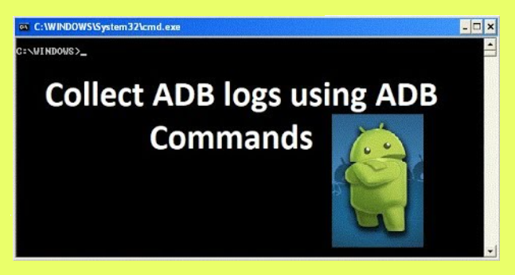

El uso de smartphones se ha incremetado, el mobile testingse combirtio en
algo imprescindible. Es por eso, que el testing mobile se volvió una
necesidad prácticamente crítica para el negocio y su calidad.
Web testing diferencias/similitudes
Similitudes: Tendremos que buscar que todo sea
funcional acorde a la documentación.
Diferencias: El mobile testing tiene algunas
particularidades al tratarse de aplicaciones nativas, y no de un
desarrollo sobre una web. Las apps deberán ser probadas con distintas
tecnologías y buscando otro tipo de tareas, como tiempos de respuesta y
apertura de aplicación, por ejemplo, en segundo plano, con los botones
de volumen (tiempo de rta, esto si es lento genera irritabilidad)
Pruebas en distintos dispositivos
Pruebas en hardware
Deberemos realizar las pruebas en la mayor cantidad de versiones de
móviles que existan, debido a que algunas arquitecturas físicas pueden
llegar a modificar tiempos de respuesta o funcionamiento.
Pruebas de software
Tenemos que realizar las pruebas en la mayor cobertura de sistemas
operativos existentes. Es importante tener en cuenta que todos estos S.O.
deberán ser los que todavía tienen soporte por la empresa desarrolladora.
Esto es porque si un S.O. ya está deprecado, tratar de mantener la
aplicación en ellos, será costoso.
Tablets
que todo lo trabajado en dispositivos móviles, también tendrá una
contraparte en tablets hay que recordar a estos equipos al momento de
hacer pruebas móviles para mayor cobertura de servicio.
Aplicaciones Nativas o Web
Aplicación Nativas
La aplicación nativa, como su nombre lo indica, está hecha para funcionar
directamente sobre el sistema operativo. Por esta razon, es mas rapida
pero mas dificil de desarrollar.
Hablan directo con el sistema operativo.
Aprovechan más recursos y utilizan más herramientas.
Características:
Utiliza más recursos del sistema
Más compleja de armar
Más rápidas y ofrecen un mejor desempeño
Permiten abrir web apps
Desventajas:
Hay que hacer un desarrollo específico por cada sistema operativo.
Necesitan mantenimiento de forma constante.
Son más pesadas.
Aplicación Web
Se denominan así porque corren sobre las distintas versiones de
exploradores web. Una aplicación web cuenta con el principal beneficio de
que funciona universalmente en todos los exploradores.
Primero, pasan por un explorador.
Luego, habla con el sistema operativo.
Como resultado, presentan mayor lentitud.
Como punto a favor, son app más rápidas de desarrollar.
Características:
Compatibilidad con otros exploradores
Sencilla de programar
Prácticas y rápida de armar
Desventajas:
Comportamiento variable.
No funcionan si no hay conexión a internet
No se pueden emular aplicaciones nativas.
Sistemas operativos S.O:
es un conjunto de órdenes y procesos que permiten ejecutar programas y
funcionamientos del hardware.
Android:
Es un S.O. de móviles basado en Linux y otros de código abierto. Debido a
esto, no solo lo encontramos en smartphones, sino que también está en un
sinfín de otros dispositivos.
Características: Es el S.O. más usado, pero para destacar
algunos, tenemos un gran diseño de dispositivos, gran cantidad de
conectividad, navegadores web, soporte java, multimedia, streaming y
hardware adicional.
iOS:
Desarrollado por Apple para todos sus dispositivos. Originalmente fue
desarrollado para iPhone, hoy en día también se encuentra en su iPad y
iPod touch, entre otros.
Características: Uno de los detalles que hace a este
sistema lo que es es su nivel de seguridad, debido a que es un S.O.
cerrado y todas las aplicaciones pasan por un chequeo previo de la gente
de Apple.
Herramientas para Mobile Testing:
Pesar del gran crecimiento de los equipos móviles que existe en el
mercado, no existe una gran variedad de herramientas para trabajar sobre
ellas debido a lo complejo que genera probar una aplicación.
Emuladores y Simuladores:
Estos se utilizan ya que es mas comodo y sencillo realizarlas desde la
pc. Nos permiten desde nuestro equipo de escritorio correr las
aplicaciones que posteriormente se podrán ver desde el equipo móvil.
Emuladores:
Es un programa y su función es que una computadora pueda ejecutar
software escrito por otra plataforma.
Herramientas utilizadas para ejecutar aplicaciones específicas de
algún dispositivo como un celular.
En el caso de Android,el emulador lo que hace es recrear el hardware
de un celular para hacer funcionar el sistema operativo Android sobre
él.
Simuladores:
En una aplicación que se ejecuta en una Mac, tiene acceso a los
recursos de una computadora, incluyendo la conexión de red, memoria
etc.
Reproduce el comportamiento del programa.
Ejemplos de Emuladores y Simuladores
Android Studio
Bitbar
Genymotion
Kobiton
Herramientas para Android
Android Visual Studio
Logcat
Google Play Console
Inspect Chrome
Android Visual Studio
Es la herramienta más común usada para desarrollar aplicaciones nativas.
Para la parte de testing, destacamos muchas utilidades como la
posibilidad de emular distintos modelos de celulares, para poder hacer
pruebas con apps desde la PC, así como pruebas unitarias y de
instrumentación.
Logcat
Logcat es una herramienta de android que permite guardar los logs de
todo lo que se fue ejecutando

Logcat herramienta de android
Google Play Console
Desde la consola de Google Play, Android nos permite manipular nuestra
aplicación que se encuentra en el mercado. Por ejemplo, notificaciones
por email, notificaciones in-app.
Inspect Chrome
esta herramienta que nos brinda Chrome, podremos ver en vivo todas las
llamadas que hace una web desde nuestra computadora local para ver
fallas.
Inspect Chrome herramienta de android
Herramientas para iOS
Xcode
Bitrise
TestFlight
Xcode
Xcode es similar a Android Studio, pero con su única función dentro de
equipos Mac.
Bitrise
insertar una aplicación dentro de nuestro iPhone es un poco complejo.
Para esto estamos trabajando con Bitrise. Como herramienta de
Integración Continua, Bitrise nos permite hacer una instalación de
nuestra aplicación a probar desde la plataforma donde los
desarrolladores tendrán la última build deployada para que nosotros
comencemos las pruebas.
TestFlight
TestFlight es la herramienta de testeo más utilizada por los
desarrolladores iOS. No solo para probar aplicaciones para celulares,
sino también en otros productos de la compañía como Apple Watch y Apple
TV. Con una cuenta de correo es posible invitar a cualquier persona para
testear una versión beta de una aplicación.
Herramientas para ambos sistemas
HTTP Debug Proxy - Fiddler & Charles Proxy
Debuggers
Fiddler & Charles Proxy on dos herramientas que nos permiten manipular
los endpoints. Estas son herramientas poderosas para depurar y analizar
el tráfico de red HTTP/HTTPS en entornos de desarrollo web y de
aplicaciones.
Firebase Crashlytics
Firebase Crashlytics es la solución que Google te proporciona para
obtener informes de fallas y funciona con Apple, Android, Flutter y
Unity, entre otras.